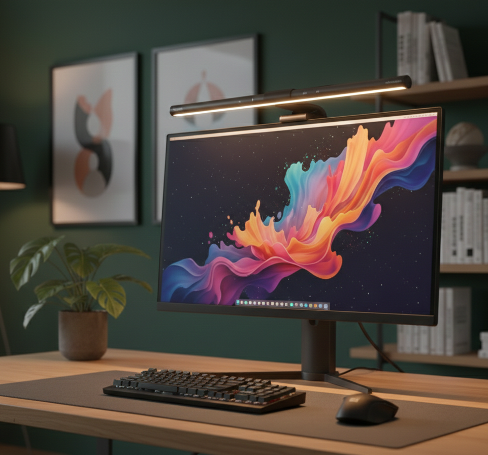

TOP VENTAS

Lámpara Monitor Quntis Pro: Iluminación Inteligente
Eleva la estética de tu escritorio con la Quntis Pro. Su diseño de clip ahorra espacio y su luz asimétrica protege tu vista sin ocupar sitio en la mesa. La pieza clave para un setup limpio, profesional y libre de reflejos.
🛒 Ver Oferta en Amazon